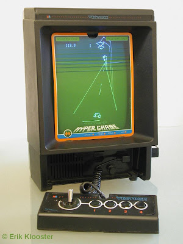
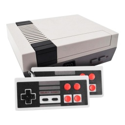

La historia empieza en quizas el 1996 o así. Yo creo que tendria unos 3 o 4 años cuando, una tarde (tonta y caliente?) al llegar a casa de parvulario o de 1r de Primaria me encontré esto.
Una Vectrex ni mas ni menos. Aunque esta "consola" havia salido hace bastante tiempo, en el 83, para mí era lo mejor que havia visto nunca. Con ella empecé en este mundo.
Recuerdo juegos como el MineStorm (copia del Asteroids), el Heads Up, juegazo de futbol y un par o tres mas de los que no he encontrado ni el nombre.
La verdad es que la consola era muy divertida de usar con esas laminas que havia que superponer en la pantalla. Sinó los unicos colores que veias era negro y verde matrix.
No mucho después aparece por casa:
Una NES (Nintendo Entertainment System). No me acuerdo perfectamente de esta consola pero sí del juego que venia con ella. El super mario bros. No fui capaç de passar del mundo 3 o 4. Era horrible la dificultad. Pero como no habia mucho mas para jugar le daba caña. Tuve 5 o 6, aunque no los recuerdo todos. Tuve el duck hunt por ejemplo. El Tetris y el Castlevania. Así de los que recuerdo.
La verdad es que era un consolón. Y, aunque el cartucho te decia que no lo hicieras, el truco de soplar, funcionava.
Ahora sí. Pasemos a la joya de la corona. La que realmente me metió de lleno en todo este mundo:
La playstation 1. Creo que por culpa de esta consola ahora soy capaç de viciarme 10 horas seguidas y sobrevivo. El primer fin de semana despues de que llegara a casa recuerdo que no pisé calle.
El primer juego con el que estrené la consola fue el crash bandicoot. Ver aquellos gráficos en 3D me voló la cabeza. Despues me aventuré a cosas como el Metal Gear Solid, los Tomb Raider, el Final Fantasy VII, el Gran Turismo, el juego de Harry Potter y la camara de los secretos, el Resident evil 2, Spyro, Rayman, la saga Driver, el Legacy of Kain, Syphon Filter, Parasite Eve y un montón mas que no recuerdo. Además una cosa espectacular que tenia eran las demos. Me compré cientos de revistas de juegos solo por los CD's de demos que venian en ellas. pLa recuerdo con muchissimo cariño y aun la tengo. La verdad es que mientras escribo esto me están entrando ganas de conectarla. En fin, sigamos.
COntinuará